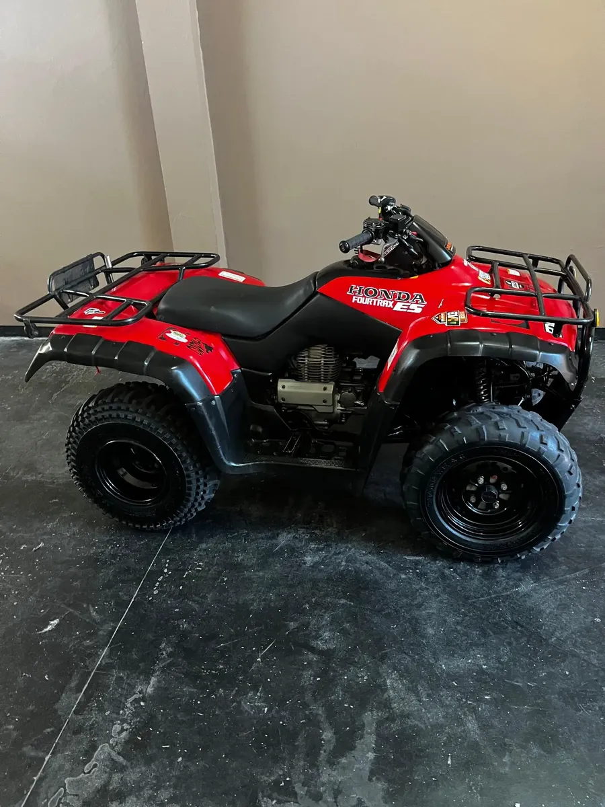

Auxilio de motos en Zona Norte
Si tu moto quedó detenida por una falla, avería o accidente, podés comunicarte con nosotros para consultar por el servicio de auxilio y traslado.
Atendemos consultas en Villa Adelina y distintas localidades de Zona Norte de Buenos Aires.
Traslado de motocicletas
Realizamos traslados de motos que necesitan llegar al taller para su revisión o reparación.
- Motos que no arrancan
- Traslado por averías mecánicas
- Traslado al taller
- Traslado luego de una reparación
- Asistencia ante inconvenientes en la vía pública
¿Necesitás auxilio?
Comunicate por WhatsApp indicando dónde se encuentra la moto y qué problema presenta. Te informaremos la disponibilidad y las condiciones del traslado.